砲口内部に入ることが可能！ 本当の四国最西端 < 佐田岬第四砲台 / 愛媛県伊方町 >
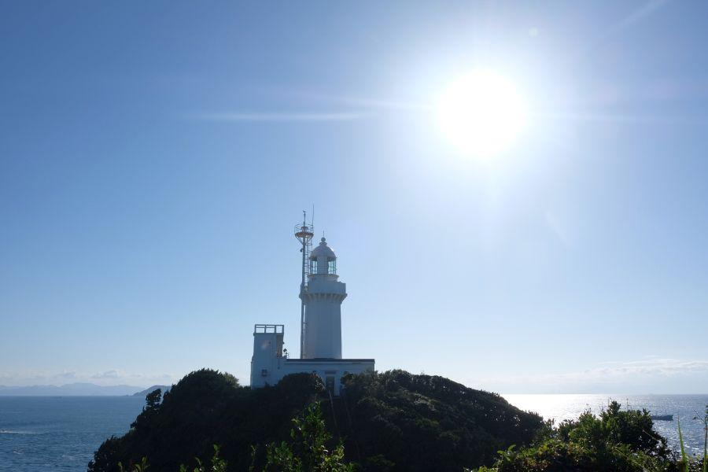
四国愛媛の西の端、ながーく伸びた "佐田岬半島"
九州大分を望むこの場所に立つ白亜の灯台は、大正7年4月1日(1918)の初点灯から今年でちょうど百年。
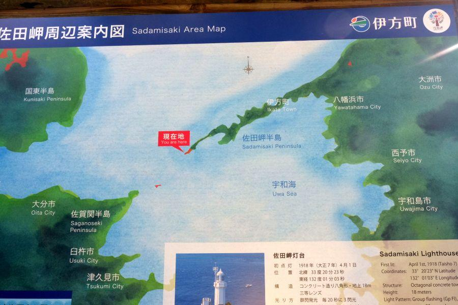
漁船も商船も軍艦も。
豊予海峡を通る全ての船舶の安全航行に、大きく寄与してきました。
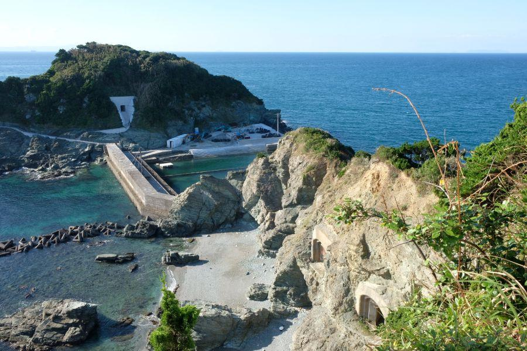
戦時中、佐田岬先端は軍事要塞として 帝国陸軍が駐留していました。
穹窖砲台(きゅうこうほうだい)こと 佐田岬第三砲台の存在が、当時の様子を今に伝えます。
こちらの砲口は入口が爆破処理により足場が破壊されていて、中の様子を窺い知ることはできません。
また 一般的に洞窟式砲台は後方に出入口があるはずですが、過去に探索した時に それは発見できませんでした。
砲台の中って どうなっているんだろう...。
そんな探検好きの皆さんに朗報です。
このほど、佐田岬燈台点灯百周年記念事業の一環で、第四砲台がある御籠島(みかごじま)へ渡る道が整備されて、佐田岬第四砲台の内部へ入ることができるようになりました！
本当の四国最西端・御籠島(みかごじま)
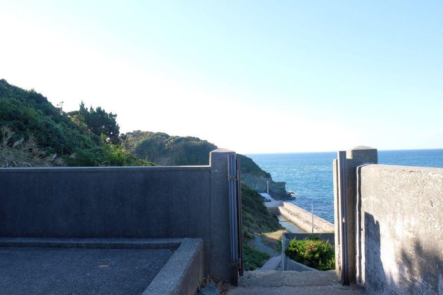
御籠島へ続く道。
灯台直下、階段が始まる前のT字路を 灯台の方へ行かず曲がったところが この場所。
佐田岬駐車場から徒歩約30分でしょうか。
ここまでも、これからも佐田岬灯台公園は 坂に階段だらけです。歩き易い靴を履いて行きましょう。
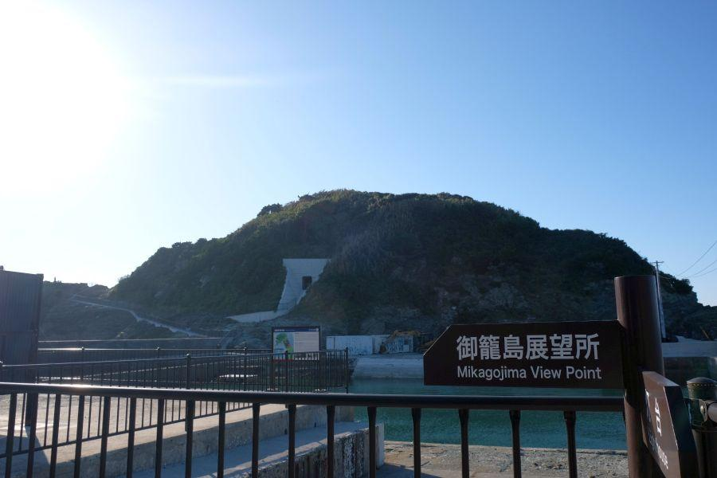
佐田岬(＝四国本土) と 御籠島
は、かつては陸続きでは無く、要塞時代の兵隊さんたちはボートに乗って島に上陸していました。
戦後、地元の三崎漁協によってこの場所に水産資源を管理する蓄養池が作られ、佐田岬と陸続きになった。
近年 蓄養池が使用されなくなり しばらく放置されていましたが、先述の記念事業によって整備が行われ、一般人も行き来が自由になりました。
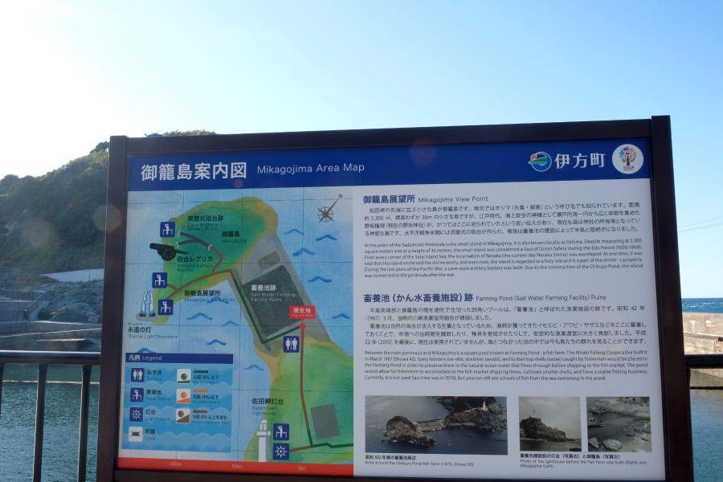
御籠島は元々、海上交通安全の神さまが祀られた神聖な島。
戦争によってその歴史が閉じられたわけですが、実戦もありませんでした。
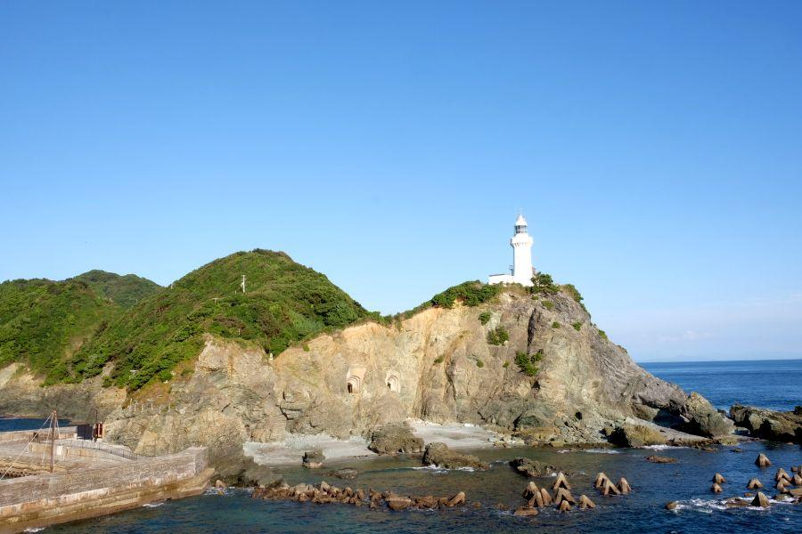
御籠島から見た佐田岬灯台
第三砲台の位置が よくわかります。
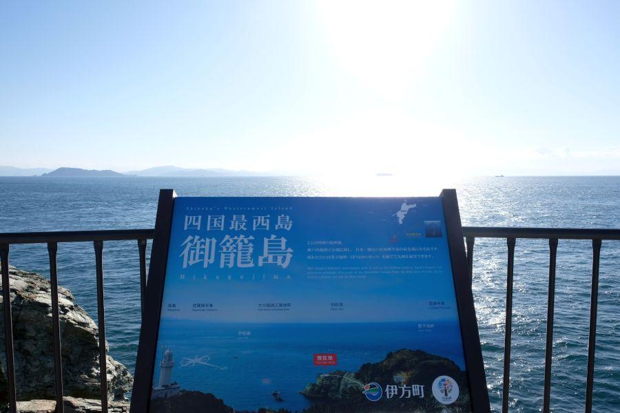
この場所が本当の "四国最西端"
佐賀関の大煙突
大分市大在にある臨海工業地帯
斜面に広がる別府の街
国東半島
・
・
・
別府湾沿岸を 広く見渡すことができます。
佐田岬第四砲台
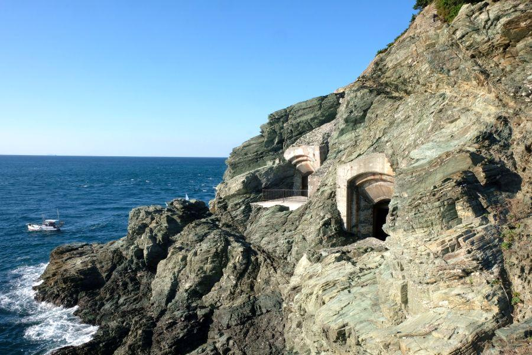
佐田岬第四砲台
断崖絶壁に開けた二基の砲口。ここもやはり 戦後四国に駐留した英国軍によって爆破処理が行われました。
今は内部へ入るのに 別のきれいな道が整備されているので、絶対に外からの進入はおやめください。本当に危険です。
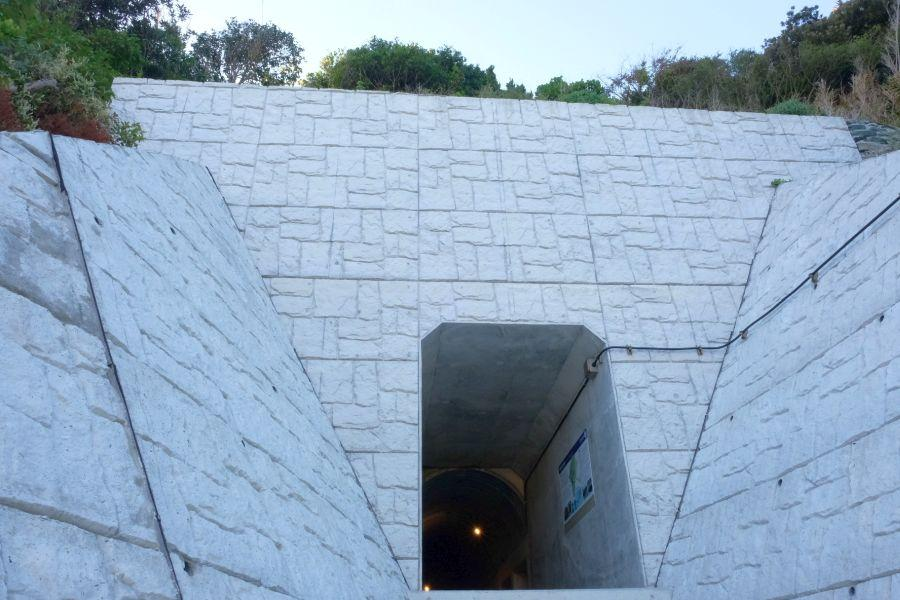
洞窟式砲台には付き物、後方出入口。こちらは整備・補強されて 安心して進入することができます。
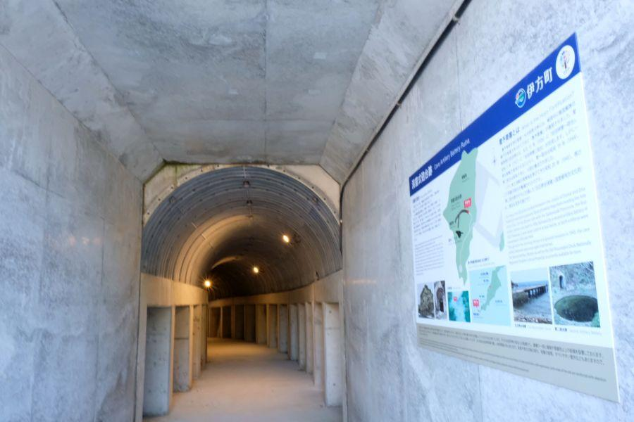
コンクリート&鉄骨で補強済み。
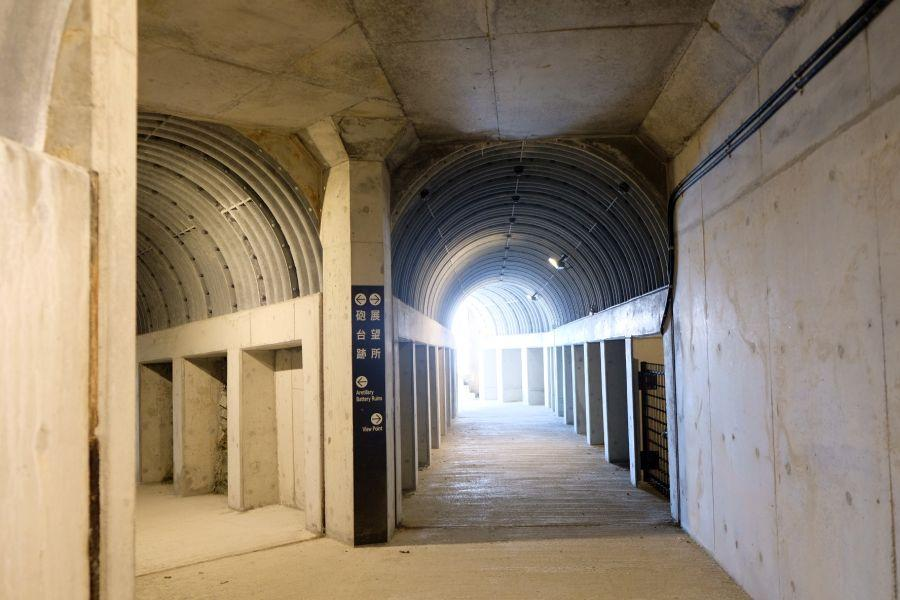
内部で二股に分かれていて、まずは砲台レプリカが置かれている左側へ進みます。
時代おくれの砲台...

三八式十二糎榴弾砲
"さんはちしきじゅうにせんちりゅうだんほう" と読みます。
砲撃の衝撃で洞窟が崩れないように 壁がコンクリートで固められていますが、支える柱は木製。
こちらの砲台が完成したのは終戦間際。資材不足が見て取れます。
(当時の柱と、現代の復元された柱が混在しています)
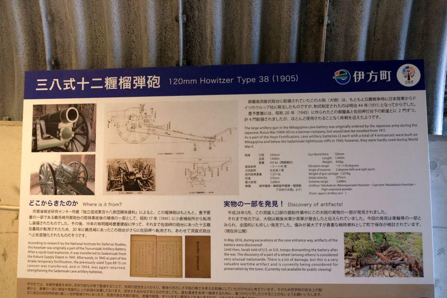
砲台はできたけれど、兵器の性能は お世辞にも高いとは言えない...
佐田岬上空は 敵機が頻繁に飛来(通過)しましたが、こちらは飛行機が登場していない明治時代の旧式野砲。当たるはずがありません。
そこは日本軍も心得ていたようで 実戦には用いられていないようです。
下手に砲撃を行うと 佐田岬先端に軍事要塞があることがばれて、せっかく築いた砲台等が攻撃されるから...
そんな説もあります。
(もちろん 偵察機によって、佐田岬要塞のことは米軍には知られていました)
設置された砲台は 砲身が1.44mしかなく、射程距離は5.68km。
豊予海峡の最も狭いところが約16kmなので、対戦艦としても明らかに役不足です。逆に言うと この砲台の玉が当たるところまで接近されていたとしたら、それはそれで終わりです。
海中では 敵国の潜水艦が頻繁に通過していたようでしたが、そちらに対しても無力でした。
悲しいけれど、終戦間際の困窮していた日本と そもそもの国力の差を痛感します。
国の将来のためと信じて 青春と命を捧げて日本の国を守っていた兵隊さんたちは、本当に厳しい現実と向き合っていたのです。
砲口に見る迷彩塗装と独特の形状
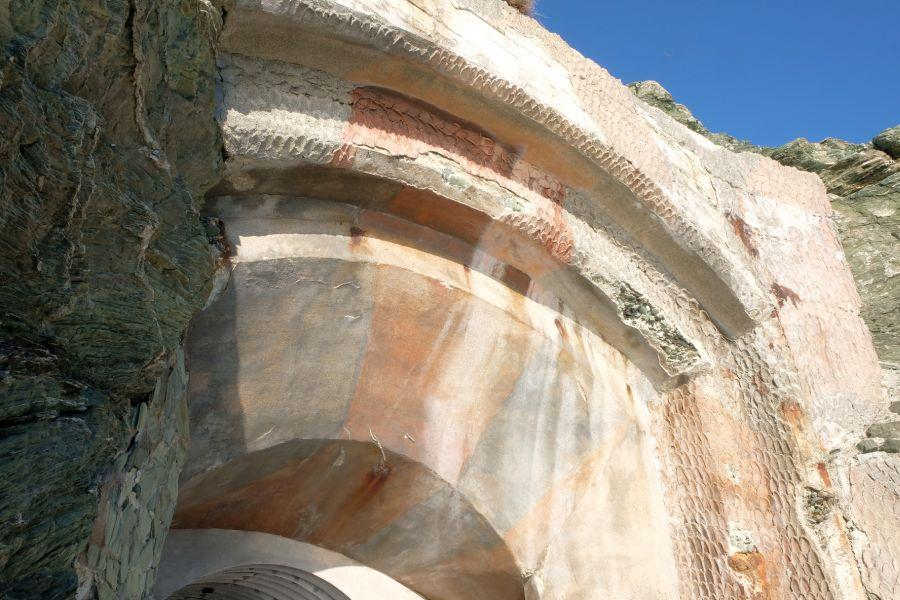
砲台レプリカが置かれている場所から少し引き返して、もう一方の砲口へ進みます。
ここまで近づくことができたのは初めて。砲台の壁から見て取れるのは、
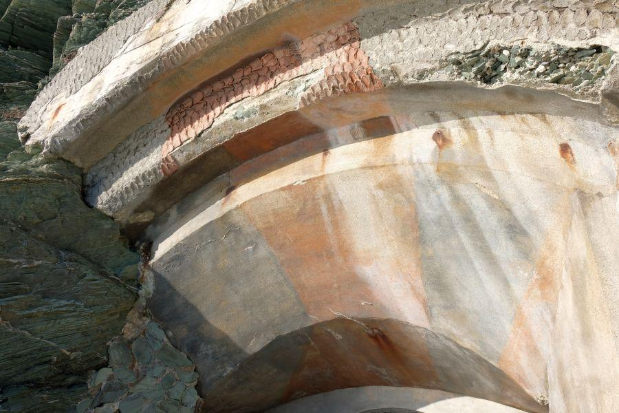
迷彩塗装と、
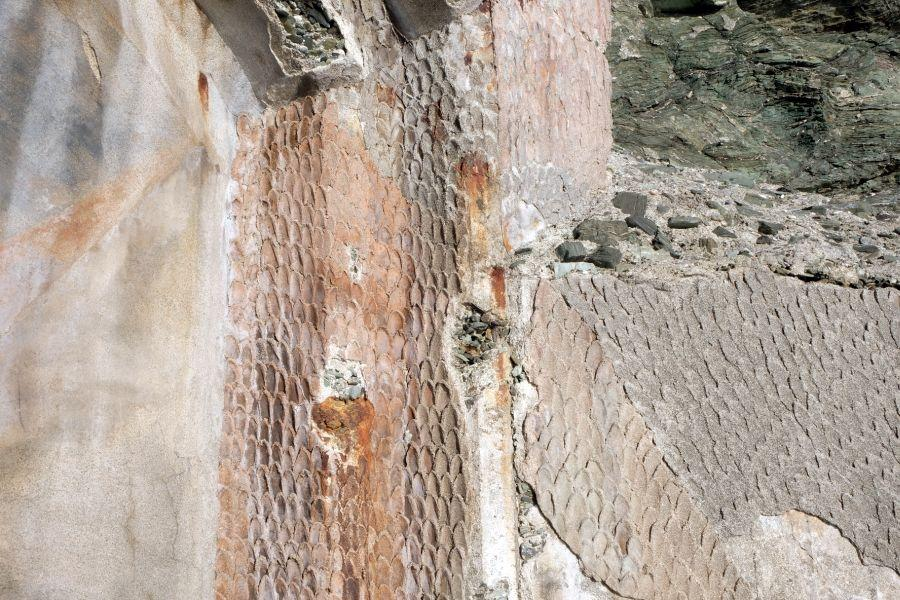
ウロコ状に固められた壁
こうすることによって 敵のレーダーに映りにくくする効果があるようです。
風雨・高潮が絶えず吹き付ける あまりにも自然が厳しい場所ですが、戦後70年を経過して その間全く手つかずであったにも関わらず、今こうして当時の姿を見ることができるのは貴重です。
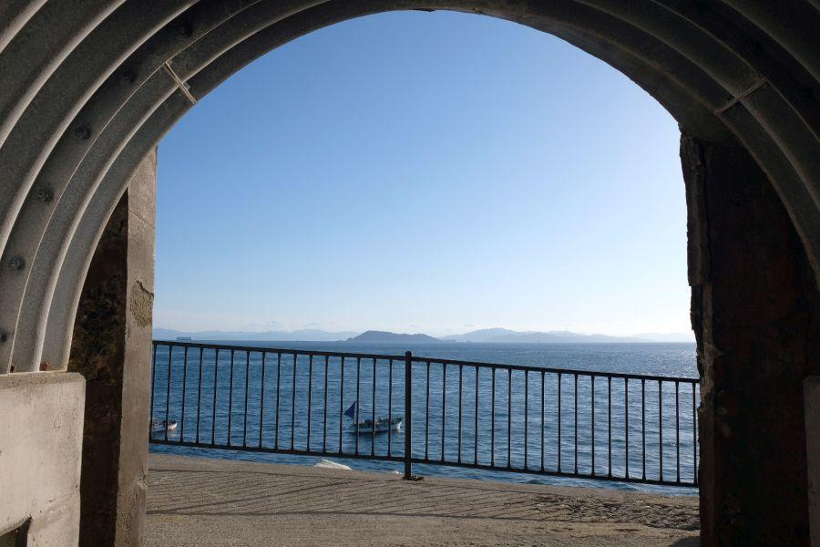
もう片方の砲口はテラスのような形になっていて、外へ出ることができます 写真参照
前に見える島は高島、その背後が九州大分。九州が本当に近く感じられる場所です。
佐田岬灯台は点灯から百年から 戦時中の要塞化を経て、現在は平和の尊さを伝え 九四眺望を楽しむことができる場所へと生まれ変わっています。
豊予要塞 佐田岬第四砲台
< 自家用車 >
高松駅から 約4時間、257km
松山空港から 約2時間20分、105km
※ 主な地点からの最速・最短距離
関連記事
2017,10/27 四国最先端の岬は かつての軍事要塞 < 佐田岬・穹窖砲台 / 愛媛県 >
2017,10/31 砲台建造資材を陸揚げするために築かれた桟橋の 現在の姿 < 旧正野谷桟橋 / 愛媛県 >
2017,11/6 鮮やかな迷彩塗装が往時の姿を留める砲台跡 < 佐田岬第二砲台 / 愛媛県 >
2018,9/27 佐田岬燈台点灯100周年記念事業により、岬先端が再整備されました< 椿山展望台 / 愛媛県伊方町 >